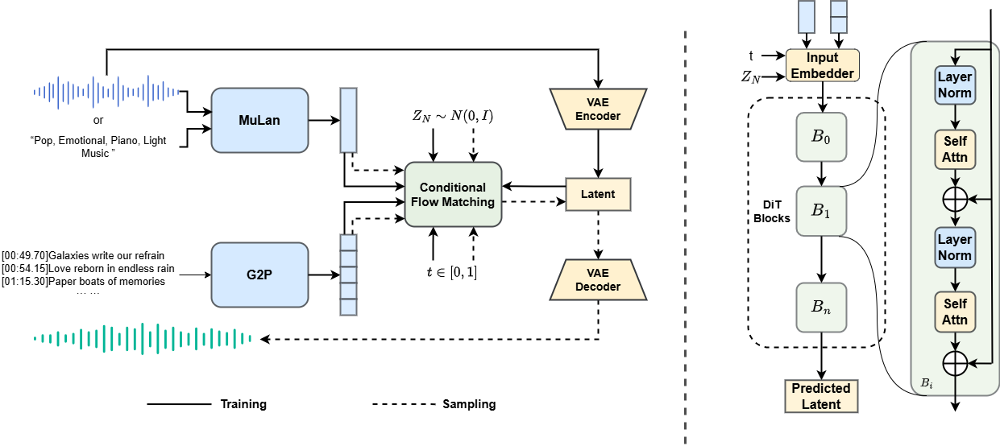

Diffrhythm+: Controllable and Flexible Full-Length Song Generation with Preference Optimization
Abstract
Songs, as a central form of musical art, exemplify the richness of human intelligence and creativity. While recent advances in generative modeling have enabled notable progress in long-form song generation, current systems for full-length song synthesis still face major challenges, including data imbalance, insufficient controllability, and inconsistent musical quality. DiffRhythm, a pioneering diffusion-based model, advanced the field by generating full-length songs with expressive vocals and accompaniment. However, its performance was constrained by an unbalanced dataset and limited controllability over musical style, resulting in noticeable quality disparities and restricted creative flexibility.
To address these limitations, we propose DiffRhythm+, an enhanced diffusion-based framework for controllable and flexible full-length song generation. DiffRhythm+ leverages a substantially expanded and balanced training dataset to mitigate issues such as repetition and omission of lyrics, while also fostering the emergence of richer musical skills and expressiveness. The framework introduces a multi-modal style conditioning strategy, enabling users to precisely specify musical styles through both descriptive text and reference audio, thereby significantly enhancing creative control and diversity. We further introduce a direct performance optimization approach aligned with user preferences, guiding the model toward consistently preferred outputs across evaluation metrics. Extensive experiments demonstrate that DiffRhythm+ achieves significant improvements in naturalness, arrangement complexity, and listener satisfaction over previous systems.

Table of contents
Text Prompt
| Prompt | Lyrics | DiffRhythm+ |
|---|---|---|
| country, acoustic guitar, rustic |
[00:04.92]Come on now tell me what you want
[00:09.36]I'll never guess just right
[00:13.85]Come on and help me learn to see
[00:18.44]Flood in the dark with light
[00:23.01]Clear out a window to your pain
[00:27.07]Like a lighthouse I aim to hit
[00:32.07]And wreck on the edges of your deepest fears and join with shoreline sinking in
[00:40.89]Like a guardian sit just below raging seas to hold back drifting ships that just
[00:47.92]watch you then leave
[00:49.78]They're like a paper airplane, dandelion I
[00:55.14]Feel the wind and watch them fly by
[00:59.60]I'm in the bedrock when the tide's high and
[01:04.71]When it feels a little low
[01:08.65]Hold on now tell me what you think
[01:13.01]Before I can let this go
[01:17.53]Sometimes I wonder if I'm really here or just leaving you with a ghost I know
[01:26.31]When the clock hits 6 and the dreams filter through
|
|
| electronic, computer, hypnotic |
[00:07.40]And if you're really love me
[00:08.43]I'll never leave you lonely
[00:10.31]Boy you could be my only
[00:12.18]'Cause you got the key
[00:13.93]Tonight untill forever
[00:15.75]As long as we're togheter
[00:18.50]We'll make it through whatever
[00:20.55]You got the key to my heart
[00:23.60]Let me up, take me higher
[00:26.51]Breath me in my desire
[00:30.13]No regrets, don't deny it
[00:34.49]Play to win, play to win
[00:37.85]I know what they say,
[00:39.60]And none of them know
[00:41.42]You make me feel say
[00:42.92]J'adore, j'adore
[00:45.24]I know what they say,
[00:47.49]And none of them know
[00:51.68]And if you're really love me
[00:52.80]I'll never leave you lonely
[00:54.61]Boy you could be my only
[00:56.49]'Cause you got the key
[00:58.30]Tonight untill forever
[01:00.30]As long as we're togheter
[01:02.59]We'll make it through whatever
[01:05.24]You got the key to my heart
[01:12.74]You got the key to my heart
[01:15.24]To my heart, to my, to my, to my heart
[01:17.70]To my heart, to my heart
[01:20.29]You got the key to my heart
[01:22.89]Tell the world I belong here
[01:26.40]Next to you I am stronger
[01:30.15]Take my hand, pull me closer
|
|
| disco, bass, guitar, energetic |
[00:16.74]You get it easy
[00:19.21]When I gonna be alone
[00:25.13]But evening when my life to contain your love
[00:32.84]Cause when the life goes alone
[00:35.78]You want it all
[00:37.31]And you back yourself and drove
[00:41.87]And when your heart is close
[00:44.04]Do you wanna in most
[00:46.18]Ease to make it
[00:47.20]Just to make it oh oh oh
[00:50.41]Because all my love he want this love
[00:54.57]And we'll take into anyone
[00:59.00]We should back then start
[01:00.93]We don't mind you had
[01:02.99]Cause your loving is so where you go
[01:07.75]oh oh
[01:11.70]So one our way is in for
[01:16.10]oh oh
[01:20.20]Loving you is all I want
[01:24.43]And you with me just put you for the reason
[01:32.35]Cause beginning so please just let it go
[01:40.62]Cause when the life goes alone
[01:43.02]You want it all
[01:45.11]And you back yourself and drove
[01:49.12]And when your heart is close
[01:51.44]Do you wanna is most
[01:53.58]Ease to make it
[01:54.57]Just to make it oh oh oh
[01:58.30]Maybe it's time to and bring for its God
[02:02.31]Cause she let me straight to your heart
[02:06.66]Maybe but ready to save what we want
[02:10.52]Dist I'm coming for you
[02:14.54]Because all my love he want this love
[02:18.74]And we'll take into anyone
[02:23.06]We should back then start
[02:25.17]We don't mind you had
[02:27.22]Cause your loving is so where you go
[02:31.94]oh oh
[02:36.09]Someone are we waiting for
[02:40.36]oh oh
[02:44.54]Loving you is all I want
[02:53.02]Our love she is walking line
[03:01.03]We should stay this time
[03:03.15]We don't love you had
|
|
| classical, flute, sentimental |
[00:30.76]相识山海苑 星光零乱
[00:37.97]折花回首见 月下红颜
[00:44.71]迷离目光闪 却是无言
[00:51.74]背影随风散 惊觉乍现
[00:58.63]倩影 落空山
[01:01.88]玉手握 生死缘 如云烟
[01:07.15]只念 情深 淡然
[01:21.57]看 云 霞漫天
[01:27.64]恩与怨 蓦然间 与君断
|
|
| pop, synth, youthful |
[00:15.88]一个人独自分享
[00:25.41]幸福在慢慢削减
[00:32.43]如今的我适应了
[00:33.75]太多悲伤可
[00:38.92]无权关心房
[00:44.71]我想要时间倒转
[00:51.85]回到最初的地方
[00:59.71]从没估计
[01:03.42]总是那么的简单
[01:06.15]反而不见受伤
[01:12.51]我们之间
[01:14.87]多了些无法填充的缝隙
[01:19.75]或许是我方式太过不自然
[01:26.59]我只想说你是我感情撕裂的空缺
|
|
| pop, drums, playful |
[00:13.57]我找不到那个你曾说的远方
[00:19.50]也想不到要怎么问你别来无恙
[00:25.71]世界乱的一塌糊涂可是能怎样
[00:31.85]偶尔抬起头来还好有颗月亮可赏
[00:38.96]太多回忆要我怎么摆进行李箱
[00:45.22]一直没哭一直走路走灰多少太阳
[00:51.70]因为往事没有办法悬赏 隐形在那大街小巷
[01:00.22]剪断了它还嚣张
[01:03.85]我的嘴在说谎 说的那么漂亮
[01:10.07]说我早就忘了你像月一样的俏脸庞
[01:16.51]最怕一边忙呀忙一边回想那旧时光
[01:22.87]剪不掉的是你 带泪的脸 还真是烦
[01:43.32]多少原因将我绑在半夜屋顶上
[01:49.23]一直没再爱一个人如今就是这样
[01:55.75]因为故事跟你说了一半 于是搁在所谓云端
[02:04.21]谁忘不了谁孤单
[02:07.79]我的心在说谎 说下去会疯狂
[02:14.02]如果没有月亮那些日子都无妨
[02:20.43]最怕一边忙呀忙一边想那旧时光
[02:26.91]剪不掉的是你 带笑的苦 还真烦
[02:33.81]我的嘴又说了谎 说的那么漂亮
[02:39.68]以为已经忘了你的那些美像月光它剪不断
[02:47.15]因为爱早就钻进心脏 心一跳泪就会烫
[02:52.22]那些带泪的脸 带笑的苦 还真烦
[02:59.28]月亮是个凶手 想你的我 是通缉犯
[03:08.03]我有时候真的很怕望见那月光中的你
|
Audio Prompt
| Prompt | Lyrics | DiffRhythm | DiffRhythm+ |
|---|---|---|---|
[00:20.87]Frosted windowpanes
[00:25.32]Candles gleaming inside
[00:28.73]Painted candy canes on the tree
[00:34.02]Santa's on his way
[00:38.64]He's filled his sleigh with things
[00:44.71]Things for you and for me
[00:49.07]It's that time of year
[00:52.64]When the world falls in love
[00:56.03]Every song you hear seems to say
[01:01.75]"Merry Christmas
[01:05.20]May your New Year dreams come true"
[01:13.37]And this song of mine
[01:17.14]In three-quarter time
|
|||
[00:06.16]When I told you
[00:08.24]That I needed space
[00:10.33]Never thought you’d go and move an ocean away
[00:13.25]When you text me
[00:15.14]It’s only on my birthday
[00:17.29]Blew out a candle now I wish you would stay
[00:19.81]Did you forget about
[00:22.14]Driving through the rain
[00:23.33]With all the windows down
[00:25.64]I thought you would miss me
[00:26.84]But you’re happy now
[00:28.83]And I would never tell you
[00:30.34]But it freaks me out, freaks me out
[00:33.02]Ooh
[00:34.52]Well you keep, well you keep
[00:36.24]Moving on without me
[00:41.44]All I need, all I need
[00:43.09]Is a chance to tell you
[00:46.75]I didn’t mean
[00:48.65]What I said
[00:50.21]I take it back
[00:51.63]Let’s start all over again
[00:55.05]Well you keep, well you keep
[00:56.72]Moving on without me
[01:22.45]Well you keep, well you keep
[01:24.24]Moving on without me
[01:28.44]I erase you
[01:30.43]But you keep coming up
|
|||
[00:08.44]It's only been a day
[00:12.39]But it's like I cant go on
[00:15.75]I just wanna say
[00:19.89]I never meant to do you wrong
[00:23.85]And I remember you told me baby
[00:27.21]Somethings gotta give
[00:30.07]If I cant be the one to hold you baby
[00:34.70]I dont think I could live
[00:37.25]Now Im so sick of being lonely
[00:41.59]This is killing me so slowly
[00:45.32]Dont pretend that you dont know me
[00:49.25]'Cause thats the worst thing you could do!
[00:52.75]Now I'm singing such a sad song
[00:56.97]These things never seem to last long
[01:00.82]Something that I never planned on
[01:04.67]Help me baby Im so sick of being lonely
[01:13.29]The stuff is in my house
[01:17.57]So many things I cant ignore
[01:21.39]Coaster they're on the coach
[01:25.26]Your photos on my freezer door
[01:29.26]And I remember you told me baby
[01:32.29]Somethings gotta give
[01:35.35]If I cant be the one to hold you baby
[01:40.06]I dont think I could live
[01:42.60]Now Im so sick of being lonely
[01:46.87]This is killing me so slowly
[01:50.65]Dont pretend that you dont know me
[01:54.59]Thats the worst thing you could do!
[01:58.26]Now I'm singing such a sad song
[02:02.23]These things never seem to last long
[02:06.14]Something that I never planned on
[02:09.93]Help me baby Im so sick of being lonely
[02:29.19]I am so lonely
[02:41.96]And I remember you told me baby
[02:45.37]Somethings gotta give
[02:48.33]If I cant be the one to hold you baby
[02:52.97]I dont think I could live
[02:55.68]Now Im so sick of being lonely
[02:59.87]This is killing me so slowly
[03:03.71]Dont pretend that you dont know me
[03:07.53]Thats the worst thing you could do!
[03:11.53]Now I'm singing such a sad song
[03:15.21]These things never seem to last long
[03:19.03]Something that I never planned on
[03:22.93]Help me baby Im so sick of being lonely
[03:30.72]I am so lonely
[03:34.47]I am so lonely.
|
|||
[00:18.71]Boy to man
[00:19.62]that shit not that easy
[00:20.89]Boy to man
[00:22.05]习惯很多事不按规矩
[00:23.25]Boy to man
[00:24.05]有些变化是逐渐
[00:25.17]哪些底线不能变童心未泯天空无限
[00:27.48]Look boy to man
[00:28.82]尽量保存些自我
[00:29.71]Boy to man
[00:30.85]明白很多事你试过
[00:32.11]Boy to man
[00:33.28]睁只眼再闭只眼
[00:34.43]睁开那只眼是为了让你一定要记得
[00:36.77]记得陪家人的时间多一点
[00:38.74]记得倾听对方诉说记得学会耐心点
[00:40.89]记得这些人都是爱你的在意你的答应过的
[00:43.70]所以记得收起你的Boy的一面
[00:45.32]记得在家算什么担当
[00:47.57]记得尽量保护好惊喜别穿帮
[00:49.82]记得紧闭那只眼别翻旧账
[00:51.93]记得Teamwork作战不是单枪
[00:55.03]Here we go boy to man
[00:57.42]逐渐失去的健谈疑难在眼里旋转
[01:01.82]他目光始终向前看
[01:04.75]Here we go boy to man
[01:06.37]习惯世间的变幻
[01:08.59]Lets bring us closer and love is the most
[01:13.84]Here we go boy to men
[01:15.62]复杂中藏着简单生活不对谁偏袒
[01:17.90]还请你学会慢慢看
[01:20.26]Here we go boy to man
[01:25.00]或多或少有牵绊
[01:26.93]But it bring us closer and love is the most
[01:31.87]要记得真诚的说出自己的感受
|
|||
[00:21.91]这里就是猫咪山
[00:27.06]已忘记何时来到这里
[00:31.69]世界仿佛在慢慢浓缩
[00:36.32]猫儿们紧紧相拥在一起
[00:45.38]这里就是猫咪山
[00:50.05]高高的屏障越来越长
[00:55.23]这蛋壳里脆弱的生命
[00:58.91]你到底敢不敢来到这世上
[01:17.50]带我去寻找新的方向
[01:22.69]期待太阳照常升起
[01:27.87]期待昨日的阳光重回大地
|
|||
[00:16.55]倦鸟西归 竹影余晖
[00:23.58]禅意心扉
[00:27.32]待清风 拂开一池春水
[00:30.83]你的手绘 玉色难褪
[00:37.99]我端详飘散的韵味
[00:40.65]落款壶底的名讳
[00:42.92]如吻西施的嘴
[00:45.14]风雅几回 总相随
[00:52.32]皆因你珍贵
[00:57.85]三千弱水 煮一杯
[01:02.21]我只饮下你的美
[01:04.92]千年余味 紫砂壶伴我醉
[01:09.73]酿一世无悔
[01:12.09]沏壶春水 翠烟飞
[01:16.62]把盏不尽你的香味
[01:20.06]邀月相对 愿今生同宿同归
[01:26.43]只让你陪
[01:46.12]茗香芳菲 世俗无追
[01:53.25]山岚雨微
[01:56.67]绕茶杯 却氲开你的美
[02:00.46]你的妩媚 百转千回
[02:07.56]我意会萦绕的古味
[02:10.33]席地吟诗我来对
[02:12.47]莫问此韵为谁
[02:14.75]风雅几回 总相随
[02:21.78]皆因你珍贵
[02:27.34]三千弱水 煮一杯
[02:31.78]我只饮下你的美
[02:34.55]千年余味 紫砂壶伴我醉
[02:39.25]酿一世无悔
[02:41.63]沏壶春水 翠烟飞
[02:46.02]把盏不尽你的香味
[02:49.65]邀月相对 愿今生同宿同归
[02:55.99]只让你陪
[02:59.46]沏壶春水 这一回
[03:03.83]共你笑饮红尘喜悲
[03:07.71]邀月相对 愿今生同宿同归
|
Musical Skills
| Prompt | Lyrics | DiffRhythm | DiffRhythm+ |
|---|
Ethics Statement
DiffRhythm+ enables the creation of original music across diverse genres, supporting applications in artistic creation, education, and entertainment. While designed for positive use cases, potential risks include unintentional copyright infringement through stylistic similarities, inappropriate blending of cultural musical elements, and misuse for generating harmful content. To ensure responsible deployment, users must implement verification mechanisms to confirm musical originality, disclose AI involvement in generated works, and obtain permissions when adapting protected styles.